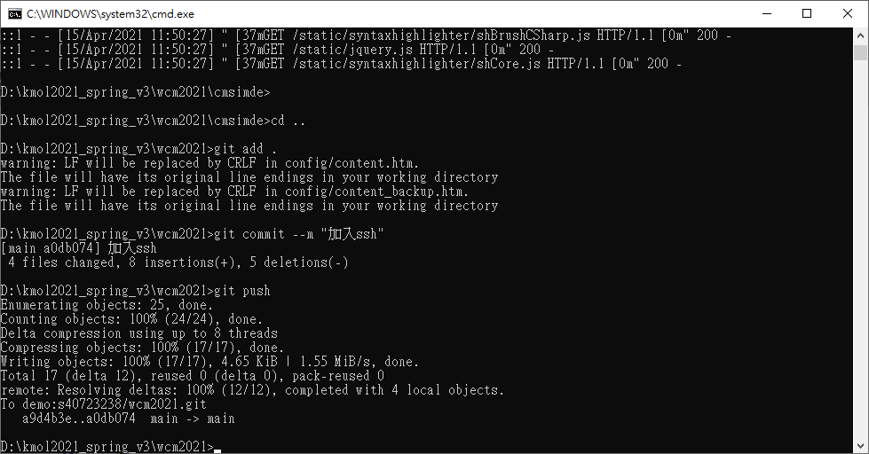
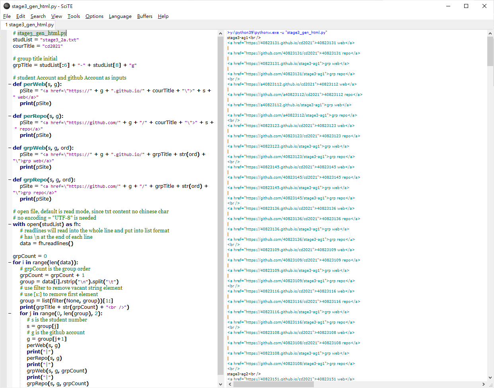

About <<
Previous 進度
week1
創建倉儲
1.在自己的guthub上新增倉儲
2.將自己倉儲設定底下的github page將sourse改成master branch
3.git clone --recurse-submodules "自己的倉儲.git"取得cmsimde裡面的文件
4.在cmsimde/up_dir複製所有資料貼到cd2020底下
5.回到cd2020並add/commit/push打自己的帳號密碼就完成創建網站了
week2
更新可攜系統
week8
加入ssh
1.先用puttygen產生一key然後到自己的github的setting新增一個ssh起名為demo
2.點private key放到y槽目錄
3.打開putty新增一名叫demo的設定
4.設定proxy[2001:288:6004:17::69]，埠號為3128
5.點ssh下的auth指向自己的剛剛存的private key
6.為到session頁面按open看有沒有login畫面
7.wcm2021\.git\config打開在url = https://github.com/s40723238/wcm2021.git前加#
8.新增一行url = git@demo:s40723238/wcm2021.git
9.在start ipv6加一行set GIT_SSH=%DISK%:\putty\plink.exe
成功截圖

w14
# stage3_gen_html.py
studList = "stage3_2a.txt"
courTitle = "cd2021"
# group title initial
grpTitle = studList[:6] + "-" + studList[8] + "g"
# student Account and github Account as inputs
def perWeb(s, g):
pSite = "<a href=\"https://" + g + ".github.io/" + courTitle + "\">" + s + " web</a>"
print(pSite)
def perRepo(s, g):
pSite = "<a href=\"https://github.com/" + g + "/" + courTitle + "\">" + s + " repo</a>"
print(pSite)
def grpWeb(s, g, ord):
pSite = "<a href=\"https://" + g + ".github.io/" + grpTitle + str(ord) + "\">grp web</a>"
print(pSite)
def grpRepo(s, g, ord):
pSite = "<a href=\"https://github.com/" + g + "/" + grpTitle + str(ord) + "\">grp repo</a>"
print(pSite)
# open file, default is read mode, since txt content no chinese char
# no encoding = "UTF-8" is needed
with open(studList) as fh:
# readlines will read into the whole line and put into list format
# has \n at the end of each line
data = fh.readlines()
grpCount = 0
for i in range(len(data)):
# grpCount is the group order
grpCount = grpCount + 1
group = data[i].rstrip("\n").split("\t")
# use filter to remove vacant string element
# use [1:] to remove first element
group = list(filter(None, group))[1:]
print(grpTitle + str(grpCount) + "<br />")
for j in range(0, len(group), 2):
# s is the student number
s = group[j]
# g is the github account
g = group[j+1]
perWeb(s, g)
print("|")
perRepo(s, g)
print("|")
grpWeb(s, g, grpCount)
print("|")
grpRepo(s, g, grpCount)
print("<br />")
儲存檔名為stage3_gen_html.py
再另存網站名為stage3_2a.txt
在跑出結果

w15
開會紀錄
About <<
Previous